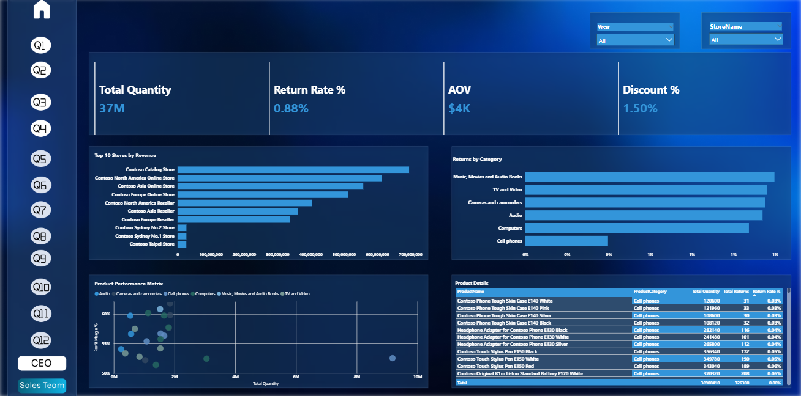
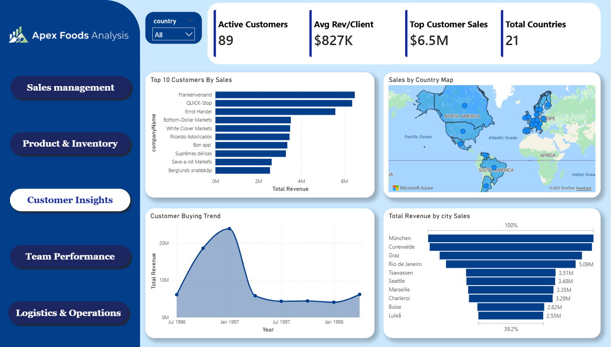

BIS graduate from Helwan University (GPA 3.99/4.00) with hands-on experience in data analysis and business intelligence — building dashboards, uncovering trends, and translating numbers into business strategy.
The stack I use to clean, model, and visualize data end to end.
The core stack behind every dashboard and analysis.
What shapes how I work with data and people.
Data Analysis Diploma — Route IT Training Center (6 months). Hands-on training in data analysis, dashboards, and BI.
A couple of dashboards I'm proud of — full list on the Projects page.

Interactive Power BI dashboard analyzing sales performance, KPIs, and regional trends to support business forecasting.

Power BI dashboard covering sales, inventory, customer behavior, employee performance, and logistics operations.
Open to junior data analyst roles, internships, and freelance dashboard work.
Start a conversation →